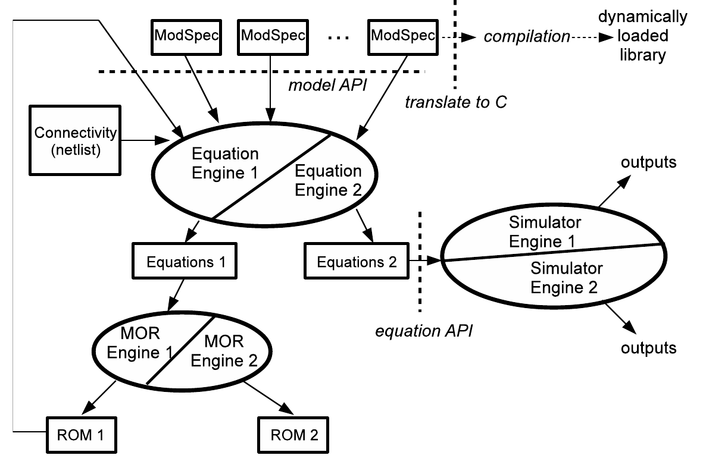

We are also interested in the following areas:
Oscillatory Systems
|  | Xiaolue's pictures PPV macromodel and phase noise. Injection locking and fast simulations. Application to PLLs.
More information: on our publications page. This research is funded by Sandia/DoE. |
{kind=link}
Nonlinear Model Reduction
 |
Picture: curved manifolds maniMOR; QLMOR; PWP; TVP; ADAMIN More information: ??? on our publications page. |
Systems with widely separated timescales
|
|
MPDE picture MPDE, WaMPDE papers; sacchadic methods - Balachandran |
Variability and Yield in SRAMs
{}{img_left}{figuresDAE2FSM-FSM-latch-4states.png}{DAE2FSM-generated non-ideal latch FSM}{300}{}{figuresDAE2FSM-FSM-latch-4states.png}
Chenjie's best paper; Shweta's papers
Fast algorithms for high-speed/RF
(no oscillator stuff)
Melville/PeterF paper on fast HB
cyclostationary noise computation
fast latch setup/hold computation
transmission line simulation
Practical methods for globally convergent solution of nonlinear equation systems
picture: show a 3D flip-flop picture
homotopy for CMOS circuits